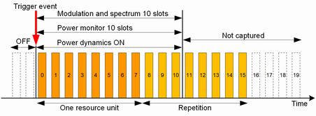
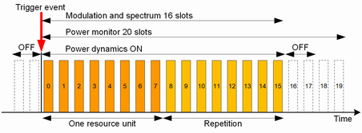

For each trigger event, the NB-IoT multi-evaluation measurement can capture up to 256 consecutive slots. The number of captured slots is configured as "No. of Measure Slots".
If you use a power trigger, the slot sequence starts with the beginning of the first resource unit of an NPUSCH transmission.
- The "Power Monitor" shows the entire slot sequence. The sequence can contain allocated slots and not-allocated slots.
- The modulation and spectrum results are derived from all allocated slots within the slot sequence. Not-allocated slots do not contribute. Allocated slots exceeding the "No. of Measure Slots" do also not contribute.
Modulation measurements include EVM, magnitude error, phase error, I/Q and inband emissions.
Spectrum measurements include spectrum emission and ACLR results.
To get the maximum measurement speed for these results, set "No. of Measure Slots" to the number of slots in the transmission, including repetitions. - For the "Power Dynamics" results, one slot sequence delivers one set of results (OFF ON OFF power).
The OFF power after the last allocated slot can only be measured, if all allocated resource units are captured, including repetitions. That means, to measure the complete result sequence (OFF ON OFF), you must set "No. of Measure Slots" equal or greater than the number of slots in the transmission, including repetitions.
Assume that you have NPUSCH format 1 with 3 subcarriers. So there are 8 slots per resource unit. One resource unit is allocated. The NPUSCH transmission is repeated (repetitions = 2).
So your NPUSCH signal contains a continuous sequence of 16 allocated slots.
- The power monitor covers the first 10 slots. Measuring one slot sequence increases the statistic count by 1.
- The first 10 slots contribute to the modulation and spectrum results. Measuring one slot sequence increases the statistic count by 10.
- The OFF power after the last allocated slot cannot be measured. Only the OFF power before the first allocated slot and the ON power are measured. Measuring one slot sequence increases the statistic count by 1.

- The power monitor covers 20 slots (16 allocated slots plus 4 not-allocated slots). Measuring one slot sequence increases the statistic count by 1.
- The 16 allocated slots contribute to the modulation and spectrum results. Measuring one slot sequence increases the statistic count by 16.
- All power dynamics results are measured (OFF ON OFF). Measuring one slot sequence increases the statistic count by 1.

If you set the number of measured slots to 16, you get the same results as with 20 slots - at least for modulation, spectrum and power dynamics results. The change would only affect the power monitor, where you would see 16 slots instead of 20 slots.